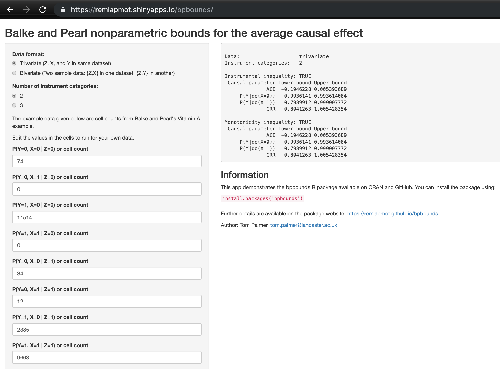

What range could your causal effect lie between if the instrumental variable assumptions held?
Find out with our bpbounds R package and Shiny app!
bpbounds: R package and web app
Tom Palmer 1, 
tom.palmer@lancaster.ac.uk
Roland Ramsahai Vanessa Didelez2 Nuala Sheehan3
1 Department of Mathematics and Statistics, Lancaster University
2 Leibniz BIPS, Bremen, Germany
3 Department of Health Sciences, University of Leicester
Introduction
- We present our bpbounds R package and Shiny web app for the nonparametric bounds for the average causal effect (ACE) due to Balke and Pearl (Palmer et al. 2018).
- This is an R implementation of our Stata programs (Palmer et al. 2011).
- The package can be installed from CRAN as follows:
install.packages("bpbounds")- Code development is on the GitHub repository: https://github.com/remlapmot/bpbounds
Methods
- Under the instrumental variable assumptions alone, without additional parametric model assumptions, the ACE is not identified.
- Balke and Pearl (1997) showed it is possible to derive bounds for the ACE.
- The bounds have the following interpretation:
There is some joint distribution of the unobserved confounders and the observed variables that yields a true ACE as small as the lower bound, while another choice produces an ACE as large as the upper bounds (the bounds are tight).
- There are at least two ways to implement the Balke-Pearl bounds:
- using conditional probabilities calculated from contingency tables;
- the polytope method due to Dawid (2003).
- We implemented the polytope method since it is generalisable for identified IV models with exposures, outcomes, and instruments with more than 2 categories.
- Currently, we allow for a binary or 3 category instrument, and binary exposure and outcome.
Example Mendelian randomization analysis
- We extract an example from Meleady et al. (2003).
- We have a 3 category instrument and binary exposure and outcome.
- We use the 677CT polymorphism (rs1801133) in the MTHFR gene, involved in folate metabolism, as an instrumental variable to investigate the causal effect of homocysteine on the risk of cardiovascular disease.
- The code is shown on the right.
- The ACE lies between a risk difference of -9% to 74% increase in absolute risk.
- Additionally, we see that the monotonicity inequality is not satisfied.
Conclusion
- Use of bounds in instrumental variable analyses is regaining interest (Swanson et al. 2018; Labrecque and Swanson 2018).
- The empirical experience that the bounds are often wide is not a bad property of the method, it is a property of the typical data: Mendelian randomization data simply often are uninformative in that sense due to weak instrumental variables.
- We recommend using the bounds when the variables are genuinely discrete, but not when the exposure is genuinely continuous (Sheehan and Didelez 2019).
- Our R package and app provide a convenient interface to the bounds.
References
Balke, A., and J. Pearl. 1997. “Bounds on treatment effects from studies with imperfect compliance.” Journal of the American Statistical Association 92 (439): 1172–6. https://doi.org/10.1080/01621459.1997.10474074.
Dawid, A. P. 2003. “Causal Inference Using Influence Diagrams: The Problem of Partial Compliance (with Discusssion).” In Highly Structured Stochastic Systems, edited by P. J. Green, N. L. Hjort, and S. Richardson, 45–65. New York: Oxford University Press.
Labrecque, Jeremy, and Sonja A Swanson. 2018. “Understanding the Assumptions Underlying Instrumental Variable Analyses: A Brief Review of Falsification Strategies and Related Tools.” Current Epidemiology Reports 5 (3): 214–20. https://doi.org/10.1007/s4047.
Meleady, Raymond, Per M Ueland, Henk Blom, Alexander S Whitehead, Helga Refsum, Leslie E Daly, Stein Emil Vollset, et al. 2003. “Thermolabile Methylenetetrahydrofolate Reductase, Homocysteine, and Cardiovascular Disease Risk: The European Concerted Action Project.” The American Journal of Clinical Nutrition 77 (1): 63–70. https://doi.org/10.1093/ajcn/77.1.63.
Palmer, T. M., R. Ramsahai, V. Didelez, and N. A. Sheehan. 2018. bpbounds: R package implementing Balke-Pearl bounds for the average causal effect. https://CRAN.R-project.org/package=bpbounds.
Palmer, T. M., R. R. Ramsahai, V. Didelez, and N. A Sheehan. 2011. “Nonparametric Bounds for the Causal Effect in a Binary Instrumental-Variable Model.” Stata Journal 11 (3): 345–67. http://www.stata-journal.com/article.html?article=st0232.
Sheehan, Nuala A, and Vanessa Didelez. 2019. “Epidemiology, genetic epidemiology and Mendelian randomisation: more need than ever to attend to detail.” Human Genetics, 1–16. https://doi.org/10.1007/s00439-019-02027-3.
Swanson, Sonja A., Miguel A. Hernán, Matthew Miller, James M. Robins, and Thomas S. Richardson. 2018. “Partial Identification of the Average Treatment Effect Using Instrumental Variables: Review of Methods for Binary Instruments, Treatments, and Outcomes.” Journal of the American Statistical Association 113 (522): 933–47. https://doi.org/10.1080/01621459.2018.1434530.
Extra Figures & Tables
library(bpbounds)
mt3 <- c(.83, .05, .11, .01,
.88, .06, .05, .01,
.72, .05, .20, .03)
p3 <- array(mt3, dim = c(2, 2, 3),
dimnames = list(x = c(0, 1),
y = c(0, 1),
z = c(0, 1, 2)))
bpres3 <- bpbounds(as.table(p3))
summary(bpres3)
##
## Data: trivariate
## Instrument categories: 3
##
## Instrumental inequality: TRUE
## Causal parameter Lower bound Upper bound
## ACE -0.09 0.74000
## P(Y|do(X=0)) 0.06 0.12000
## P(Y|do(X=1)) 0.03 0.80000
## CRR 0.25 13.33333
##
## Monotonicity inequality: FALSEFigure 1: Shiny app https://remlapmot.shinyapps.io/bpbounds

Figure 2: Screenshot of our Shiny app.
Figure 3: Package website https://remlapmot.github.io/bpbounds/